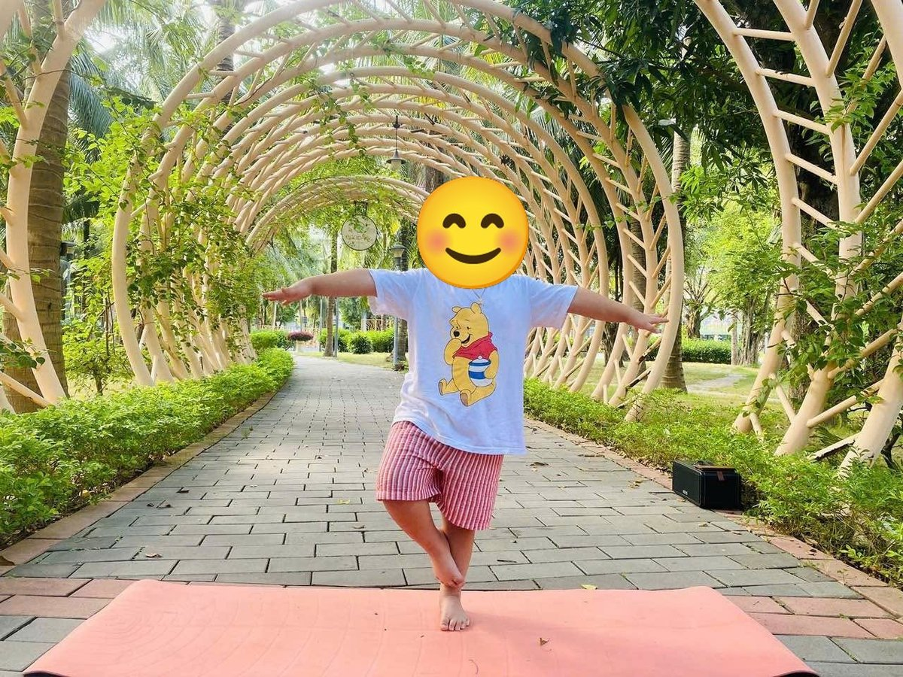
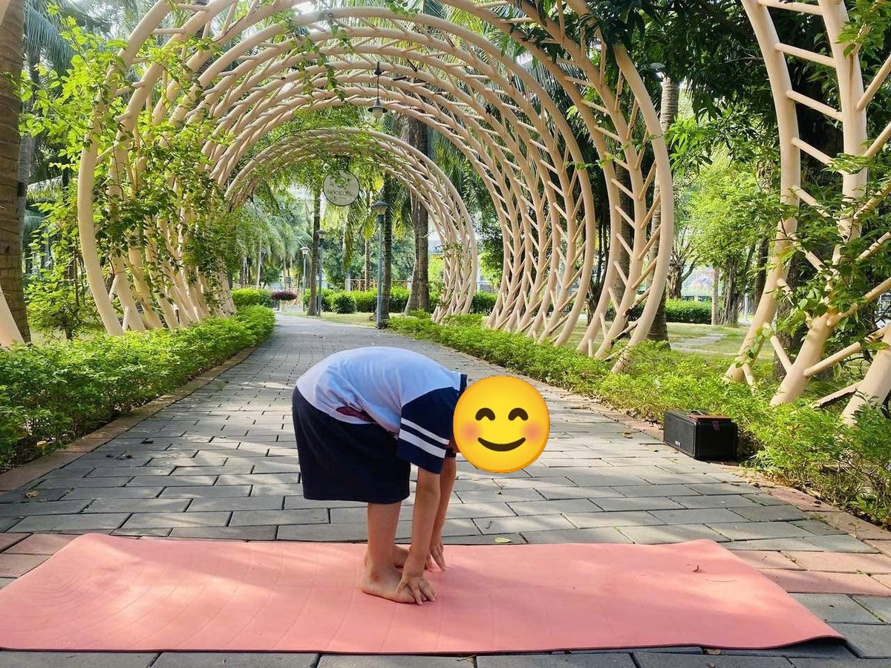
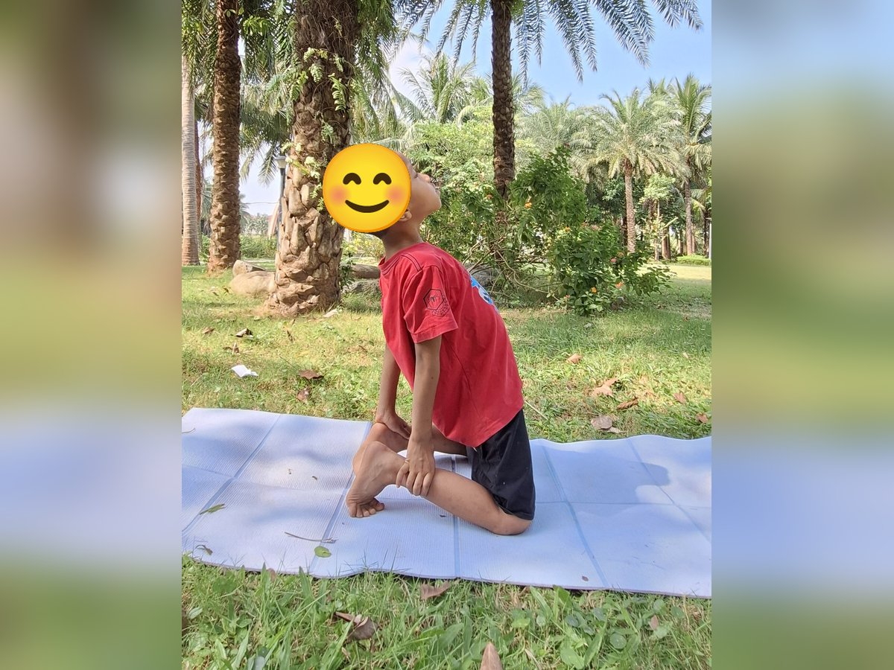

Chủ đề 12 · Ngày của Mẹ
Kangaroo Con tìm mẹ
🌟 Bài học trong câu chuyện
Giới luật yoga: Ishvara Pranidhana – Biết ơn và tin tưởng. Bé biết nói lời cảm ơn và tin vào những điều tốt đẹp.
Kỹ năng sống: Biết ơn mẹ, giúp mẹ việc nhỏ.
1. Khởi động (2 phút)
Cả lớp ngồi xếp bằng thành vòng tròn. Cùng thở 3 hơi thở bông hoa: hít vào bằng mũi như ngửi hoa, thở ra bằng miệng thật chậm. Chắp tay trước ngực và chào nhau: “Namaste, chào các bạn!”
2. Câu chuyện: Kangaroo Con tìm mẹ (đọc cho bé nghe, 4 phút)
Cô đọc trọn câu chuyện cho bé nghe trước. Sau đó cô kể lại từng đoạn ngắn và cả lớp cùng tập 10 tư thế ở phần bên dưới.
Hôm nay là Ngày của Mẹ. Kangaroo Con nhảy ra khỏi chiếc túi ấm của mẹ: "Mẹ ơi, con đi chơi một chút nhé!". Kangaroo nhảy tưng tưng khắp đồng cỏ và hỏi các bạn: "Mẹ của bạn đã làm gì cho bạn?"
Chim Non kể: "Mẹ tớ bay rất xa tìm mồi về cho tớ mỗi ngày". Gà Con kể: "Mẹ tớ ngồi ấp trứng suốt mấy tuần liền, chẳng đi đâu cả". Mèo Con kể: "Mẹ tớ liếm lông cho tớ sạch sẽ". Voi Con kể: "Mẹ tớ dắt tớ đi uống nước, dạy tớ dùng vòi". Vịt Con kể: "Mẹ tớ dạy tớ bơi".
Kangaroo Con ngồi lặng đi. Mẹ mình cũng làm bao nhiêu việc cho mình: cho mình nằm trong túi ấm, ru mình ngủ, dắt mình đi chơi... Vậy mà mình chưa bao giờ nói lời cảm ơn mẹ.
Kangaroo hái một bông hoa thật đẹp rồi nhảy về nhà. Mẹ dang tay ôm Kangaroo vào lòng. Kangaroo nói: "Con cảm ơn mẹ. Con thương mẹ nhiều lắm!". Mẹ cười rạng rỡ.
Tối hôm đó, Kangaroo giúp mẹ dọn chỗ ngủ, rồi nằm nghe mẹ hát ru. Kangaroo Con thấy hạnh phúc vì đã biết nói lời biết ơn.
3. Kể lại và tập 10 tư thế (6 phút)
-
 1
1Kangaroo mẹ con
🧘 Tư thế Con ếch (Frog)
Lời kể khi tập: Kangaroo Con nhảy ra khỏi túi mẹ: "Mẹ ơi, con đi chơi chút nhé!". Mình nhảy như kangaroo!
Cách làm: Ngồi xổm, hai tay chạm sàn giữa hai chân, bật nhảy nhẹ và kêu "ộp ộp". Giữ 3 đến 5 nhịp thở.
-

2Chim mẹ mớm mồi
🧘 Tư thế Đại bàng (Eagle)
Lời kể khi tập: Chim Non kể: "Mẹ tớ bay xa tìm mồi cho tớ mỗi ngày".
Cách làm: Đứng một chân, chân kia co lên, bàn chân móc nhẹ vào cổ chân trụ, hai tay dang rộng như đôi cánh đại bàng giữ thăng bằng. Giữ 3 đến 5 nhịp thở.
-
 3
3Gà mẹ ấp trứng
🧘 Tư thế Gà con vỗ cánh (Chicken Wings)
Lời kể khi tập: Gà Con kể: "Mẹ tớ ấp trứng, xòe cánh ủ ấm tớ". Mình vỗ cánh như gà mẹ.
Cách làm: Ngồi xếp bằng, hai bàn tay đặt lên vai, khuỷu tay vỗ lên xuống như cánh gà. Giữ 3 đến 5 nhịp thở.
-
 4
4Mèo mẹ
🧘 Tư thế Mèo bò (Cat-Cow)
Lời kể khi tập: Mèo Con kể: "Mẹ tớ liếm lông cho tớ sạch sẽ". Meo meo!
Cách làm: Chống tay và gối, hít vào võng lưng ngẩng đầu (bò "ò ò"), thở ra cong lưng cúi đầu (mèo "meo"). Giữ 3 đến 5 nhịp thở.
-

5Voi mẹ dắt con
🧘 Tư thế Con voi (Elephant)
Lời kể khi tập: Voi Con kể: "Mẹ tớ dắt tớ đi uống nước bằng vòi".
Cách làm: Đứng gập người, hai tay buông xuống chạm sàn làm vòi voi, đung đưa nhẹ sang hai bên. Giữ 3 đến 5 nhịp thở.
-
 6
6Vịt con bơi theo mẹ
🧘 Tư thế Châu chấu (Locust)
Lời kể khi tập: Vịt Con kể: "Mẹ tớ dạy tớ bơi". Mình nằm sấp, bơi như vịt!
Cách làm: Nằm sấp, nhấc đầu và ngực lên, hai tay chống nhẹ trước mặt, chân duỗi thẳng ra sau (bé lớn có thể nhấc cả chân lên). Giữ 3 đến 5 nhịp thở.
-
 7
7Bông hoa tặng mẹ
🧘 Tư thế Hoa sen (Lotus)
Lời kể khi tập: Kangaroo Con nghĩ: mẹ mình cũng làm bao nhiêu việc cho mình. Kangaroo hái một bông hoa.
Cách làm: Ngồi xếp bằng, lưng thẳng, hai tay đặt trên gối, ngón cái chạm ngón trỏ như búp sen, thở thật chậm. Giữ 3 đến 5 nhịp thở.
-
 8
8Vòng tay mẹ
🧘 Tư thế Em bé vui (Happy Baby)
Lời kể khi tập: Kangaroo nhảy về, lắc lư vui vẻ trong vòng tay mẹ.
Cách làm: Nằm ngửa, co hai chân lên, tay nắm bàn chân, lắc lư qua lại. Giữ 3 đến 5 nhịp thở.
-

9Trái tim
🧘 Tư thế Lạc đà (Camel)
Lời kể khi tập: Kangaroo nói: "Con cảm ơn mẹ, con thương mẹ!". Mình mở ngực như trái tim.
Cách làm: Quỳ đứng, hai tay chống hông hoặc chạm gót chân như trong ảnh, nhẹ nhàng ưỡn ngực và nhìn lên trời. Giữ 3 đến 5 nhịp thở.
-
 10
10Mẹ ru con ngủ
🧘 Tư thế Thư giãn (Savasana)
Lời kể khi tập: Tối đó Kangaroo giúp mẹ dọn chỗ ngủ, rồi nằm nghe mẹ hát ru.
Cách làm: Nằm ngửa, tay chân thả lỏng, nhắm mắt, thở thật chậm. Giữ 3 đến 5 nhịp thở.
4. Thư giãn (2 phút)
Các con nằm ngửa, tay chân thả lỏng, nhắm mắt lại. Cô nói nhẹ: “Hít vào thật chậm… thở ra thật chậm… Con nhớ lại câu chuyện vừa rồi, nhớ người bạn mình thích nhất trong truyện. Cơ thể con mềm như bông, nhẹ như mây.” Sau đó các con nghiêng người, từ từ ngồi dậy.
5. Trò chuyện cùng bé (1 phút)
Kangaroo Con nhận ra mẹ đã làm rất nhiều điều cho mình và nói lời cảm ơn. Biết ơn là Ishvara Pranidhana.
Cô hỏi các con:
- Mẹ đã làm gì cho con?
- Hôm nay con giúp mẹ việc gì?
Kết thúc bằng lời chào “Namaste” và một nụ cười.
Lưu ý cho thầy cô và bố mẹ: Tập trên thảm, không tập ngay sau khi ăn no. Bé chỉ làm tới mức thấy dễ chịu, không ép bé. Tư thế đứng một chân có thể cho bé vịn tường hoặc vịn tay người lớn.